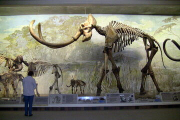

Elephants and Other Megafauna of Nebraska
Megafauna were large mammals found during the Pleistocene. The Pleistocene Epoch lasted from around 2.6 million to around 12,000 years ago and brought repeated glaciation periods with the last being what we commonly refer to as the Ice Age. The North American Ice Age peaked from 25,000 to 18,000 years ago with a dry and cold climate. This era produced many incredible mammals.
Nebraska was home to many of these amazing mammals. Among those found in Nebraska were Woolly Rhinos, Dire Wolves, Saber-toothed cats, and many other odd creatures. There was a beaver the size of a black bear and another beaver that burrowed underground like prairie dog. A Giant Ground-Sloth the size of oxen lumbered about.
Nebraska was home to many elephants like Mammoths and Mastodons. Fossil remains of elephants have been found in every county in Nebraska. In 1967 the Mammoth was designated our State Fossil in recognizion of Archie, the World's Largest Elephant. Archie, a Columbian mammoth, was found in Lincoln County and is on display in Elephant Hall at the University of Nebraska State Museum. "It is estimated that there are at least 10 prehistoric elephant remains, on average, per square mile buried in Nebraska, more than there are living elephants in Africa. http://www.mccookgazette.com/story/1097462."
Did you know that camels and lamas originated from North America? Four species of camels were found in Nebraska ranging from the Poebrotherium with the size of a beagle to the Gigantocamelus with the height of a giraffe and large canine teeth like a T Rex.

Why Did They Get so Big?
Without dinosaurs around to hunt them, the plains of Nebraska provided the herbivores the safety, food, and room to grow. But now they faced a different threat. Carnivores were able to grow also with the lack of competition from dinosaurs and like the herbivores, they had the food and room to grow big. This produced some truly weird and amazing creatures.